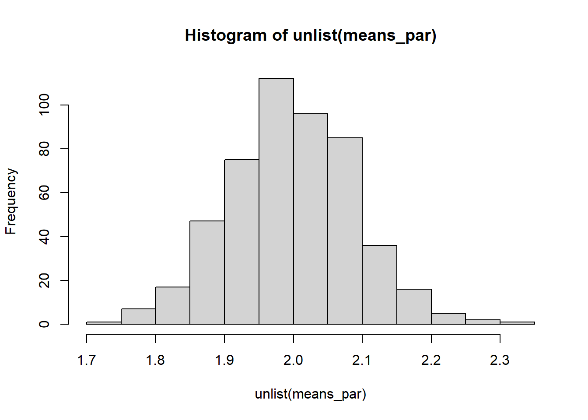

28 Extra exercises
29 Exercise Set 1: R Basics, Data Structures, and Control Flow
29.1 (1)
- Create a vector
vNumberscontaining integers from 1 to 50.
- Create a vector
- Calculate the sum of all even numbers in
vNumbers.
- Calculate the sum of all even numbers in
- Create a new vector
vLogcontaining the natural logarithm of each number invNumbers. Handle any potential warnings or errors if numbers were 0 or negative (though not the case here).
- Create a new vector
- What is the data type of
vLog?
- What is the data type of
29.2 (2)
- Create a 5x5 matrix
mRandomwith elements drawn from a uniform distribution between -10 and 10. Set the seed to 42.
- Create a 5x5 matrix
- Replace all negative values in
mRandomwith NA.
- Replace all negative values in
- Calculate the sum of each row, ignoring NA values.
- Calculate the mean of each column, ignoring NA values.
29.3 (3)
- Write an R script that does the following:
- Initializes a variable
dTotalSumto 0. - Uses a
forloop to iterate from 1 to 100. - In each iteration, if the current number
iis a multiple of 3 or a multiple of 5, additodTotalSum. - Print the final
dTotalSum.
- Initializes a variable
29.4 (4)
- Create a list
lMyListwith the following named elements:-
sName: Your name (as a string). -
vLuckyNumbers: A vector of your 3 favorite numbers. -
mMatrixA: A 2x2 identity matrix. -
dfInnerData: A data frame with two columns:Month(Jan, Feb, Mar) andRainfall_mm(50, 30, 65).
-
- Access and print the
Rainfall_mmfor February. - Add a new element to the list called
sCoursewith the value “PQE”.
29.5 (5)
- Create a data frame
dfStudentswith 5 students and 3 variables:StudentID(101 to 105),Grade(A, B, C, A, B), andAge(20, 21, 20, 22, 21).
- Create a data frame
- Convert the
Gradecolumn to an ordered factor with levels C < B < A.
- Convert the
- Add a new column
Passwhich isTRUEifGradeis A or B, andFALSEotherwise.
- Add a new column
- Create a subset of
dfStudentscontaining only students older than 20.
- Create a subset of
dfStudents <- data.frame(
StudentID = 101:105,
Grade = c("A", "B", "C", "A", "B"),
Age = c(20, 21, 20, 22, 21)
)
dfStudents$Grade <- factor(dfStudents$Grade, levels = c("C", "B", "A"), ordered = TRUE)
dfStudents$Pass <- ifelse(dfStudents$Grade == "A" | dfStudents$Grade == "B", TRUE, FALSE)
dfStudents[dfStudents$Age > 20, ]
#> StudentID Grade Age Pass
#> 2 102 B 21 TRUE
#> 4 104 A 22 TRUE
#> 5 105 B 21 TRUE29.6 (6)
- Using
ifelse(), create a vectorvSignof length 20. For each elementifrom -9 to 10,vSign[i+10]should be -1 ifiis negative, 0 ifiis zero, and 1 ifiis positive. (Adjust indexing as R vectors are 1-indexed).
29.7 (7)
- Write a
whileloop that simulates flipping a fair coin (0 for Tails, 1 for Heads) until 3 consecutive Heads are observed. Count and print the total number of flips. Set seed to 101.
29.8 (8)
- Create a character vector
vsFruitswith elements: “apple”, “banana”, “cherry”, NA, “date”.
- Create a character vector
- How many missing values are in
vsFruits?
- How many missing values are in
- Create a new vector
vsFruitsCleanby removing NA values fromvsFruits.
- Create a new vector
- For each fruit in
vsFruitsClean, print the fruit name and its number of characters usingnchar().
- For each fruit in
29.9 (9)
- Explain the difference between
&and&&, and between|and||in R. Provide a small example where&&or||would be preferred over&or|due to short-circuiting, especially when dealing with potentially undefined objects or expensive computations.
29.10 (10)
- Consider the matrix
mA <- matrix(1:12, nrow=4, byrow=TRUE). - Extract the second row.
- Extract the third column.
- Extract the element in the 1st row and 2nd column.
- Create a new matrix
mBby selecting rows 1 and 3, and columns 2 and 3 frommA.
30 Exercise Set 2: Functions, Scope, and Efficiency
30.1 (1)
- Write an R function
fCalculateStatsthat takes a numeric vector as input. - The function should return a list containing:
-
dMean: The mean of the vector. -
dMedian: The median of the vector. -
dSD: The standard deviation of the vector. -
iNAs: The number of NA values in the vector.
-
- The function should handle NA values gracefully by removing them before calculating mean, median, and SD.
- Test your function with
vTest <- c(1, 5, NA, 7, 3, NA, 8).
fCalculateStats <- function(vInput) {
outputList <- list(
dMean = mean(vInput, na.rm = TRUE),
dMedian = median(vInput, na.rm = TRUE),
dSD = sqrt(var(vInput, na.rm = TRUE)),
iNAs = sum(is.na(vInput))
)
return(outputList)
}
vTest <- c(1, 5, NA, 7, 3, NA, 8)
fCalculateStats(vTest)
#> $dMean
#> [1] 4.8
#>
#> $dMedian
#> [1] 5
#>
#> $dSD
#> [1] 2.863564
#>
#> $iNAs
#> [1] 230.2 (2)
- Consider the following R code:
x <- 10
my_func <- function(y) {
x <- 5
return(x + y)
}
z <- my_func(3)- What are the values of
xandzin the global environment after this code is executed? Explain R’s scoping rules in this context.
The value of z is 8, and the value of x is 10. x is local within the function.
30.3 (3)
- Write a function
fSumSquaresUpToNthat calculates the sum of squares of integers from 1 up ton(i.e., \(1^2 + 2^2 + ... + n^2\)). - Implement this first using a
forloop. - Implement this second using a vectorized approach (without an explicit loop).
- Use
system.time()ormicrobenchmark()to compare the execution time of both versions forn = 10000.
suppressMessages(library(microbenchmark))
#> Warning: pakke 'microbenchmark' blev bygget under R version 4.3.3
fSumSquaresUpToN <- function(iN) {
iSumSquares <- 0
for (i in 1:iN) {
iSumSquares <- iSumSquares + i^2
}
}
fSumSquaresVector <- function(iN) {
return(sum((1:iN)^2))
}
microbenchmark(fSumSquaresVector(10000), fSumSquaresUpToN(10000))
#> Unit: microseconds
#> expr min lq mean median uq max neval
#> fSumSquaresVector(10000) 24.4 56.85 73.568 58.45 61 1557.5 100
#> fSumSquaresUpToN(10000) 222.8 224.50 249.487 225.95 227 2233.7 10030.4 (4)
- Write a recursive R function
fRecursiveFactorialto calculate the factorial of a non-negative integern. Include basic error checking for negative inputs.
30.5 (5)
- Write a function
fApplyToMatrixthat takes a matrix and a functionFUNas arguments. - The function should apply
FUNto each column of the matrix usingsapplyorapply. - Test it by creating a 5x3 matrix of random numbers and applying the
meanfunction to its columns.
30.6 (6)
- Explain the purpose of the ellipsis (
...) argument in R functions. Provide an example of a simple function you write that uses...to pass arguments to an internal R function (e.g.,plotormean).
It passes additional arguments.
30.7 (7)
- Create two numeric vectors,
vA = 1:1000000andvB = rnorm(1000000). - Compare the time it takes to calculate their element-wise product using:
- A
forloop. - The vectorized
*operator.
- A
- Use
microbenchmarkfor the comparison.
30.8 (8)
- You are given a list
lDatawhere each element is a numeric vector of varying lengths, possibly containing NAs.
- Write code using
lapplyto return a new list where each element is the mean of the corresponding vector inlData, after removing NAs.
lDataClean <- lapply(lData, mean, na.rm = TRUE)
lDataClean
#> [[1]]
#> [1] 0.07462564
#>
#> [[2]]
#> [1] 0.3079017
#>
#> [[3]]
#> [1] 4.75340830.9 (9)
- Write a function
fMatrixRedimensionthat first initializes an empty vectorvResult <- c(). - Then, in a loop that runs 10,000 times, it appends the loop index
itovResultusingvResult <- c(vResult, i). - Write a second function
fMatrixPreallocatethat first initializesvResult <- numeric(10000). - Then, in a loop that runs 10,000 times, it assigns
vResult[i] <- i. - Compare the execution time of these two functions. Explain the difference.
30.10 (10)
- When might you prefer using
ifelse()over a standardif-elsestructure within a loop? Provide a small example.
Use ifelse() for vectorized conditions. Loop if-else for scalar/complex logic per iteration.
x <- -2:2
ifelse(x > 0, "positive", "negative")
#> [1] "negative" "negative" "negative" "positive" "positive"31 Exercise Set 3: Simulation
31.1 (1)
-
Simulating a Biased Die Roll:
- Write an R function
fSimulateBiasedDieto simulate rolling a 6-sided die where the probability of rolling a ‘6’ is 0.3, and the probabilities of rolling ‘1’ through ‘5’ are equal (each 0.14). - The function should take an integer
n_rollsas input and return a vector ofn_rollssimulated outcomes. - Use the discrete random variable simulation method (using
runifand comparing to CDF). - Generate 10,000 rolls and plot a histogram of the results.
- Write an R function
fSimulateBiasedDie <- function(n_rolls) {
probs <- c(rep(0.14, 5), 0.3)
outcomes <- 1:6
CDF <- cumsum(probs)
vRolls <- numeric(n_rolls)
for (i in 1:n_rolls) {
u <- runif(1)
vRolls[i] <- outcomes[min(which(u <= CDF))]
}
return(vRolls)
}
vOutcomes <- fSimulateBiasedDie(10000)
hist(vOutcomes, breaks = 0.5:6.5)31.2 (2)
-
Inverse Transform Sampling for a Custom Distribution:
- A random variable X has a probability density function (PDF) \(f(x) = 3x^2\) for \(0 \le x \le 1\), and \(f(x)=0\) otherwise.
- Find the cumulative distribution function (CDF), \(F(x)\).
- Find the inverse CDF, \(F^{-1}(u)\).
- Write an R function
fSimulateCustomto generatenrandom samples from this distribution using the inverse transform method.
- Write an R function
- Generate 10,000 samples and plot a histogram. Superimpose the theoretical PDF on the histogram.
The CDF is \(F(x)=x^3\). So the inverse CDF is \(F^{-1}(u)=u^{1/3}\).

31.3 (3)
-
Acceptance-Rejection Method for a Truncated Normal:
- You want to simulate from a standard normal distribution truncated to the interval [0, 2]. The PDF is \(f(x) = \frac{\phi(x)}{\Phi(2)-\Phi(0)}\) for \(0 \le x \le 2\), where \(\phi\) is the standard normal PDF and \(\Phi\) is the standard normal CDF.
- Use a uniform distribution on [0, 2] as the proposal distribution \(g(x) = 1/2\) for \(0 \le x \le 2\).
- Determine the constant \(c\) such that \(f(x) \le c \cdot g(x)\) for all \(x \in [0, 2]\).
- Write an R function
fSimulateTruncNormARusing the acceptance-rejection method to generatensamples from this truncated normal distribution.
- Write an R function
- Generate 10,000 samples. Plot a histogram and superimpose the theoretical PDF.
- What is the acceptance rate of your sampler?
\[ c = \frac{\phi(0)}{\Phi(2)-\Phi(0)} / \frac{1}{2-0} \approx 1.6716 \]
fTruncNormSim <- function(size) {
c <- (dnorm(0) / (pnorm(2) - pnorm(0))) / 0.5
U <- rep(NA, size)
Y <- rep(NA, size)
X <- rep(NA, size)
Unaccepted <- rep(TRUE, size)
while (any(Unaccepted)) {
UnacceptedCount <- sum(Unaccepted)
U <- runif(UnacceptedCount, 0, 1)
Y <- runif(UnacceptedCount, 0, 2)
Accepted_ThisTime <- Unaccepted[Unaccepted] & (U <= ((dnorm(Y) / (pnorm(2) - pnorm(0))) / runif(Y, 0, 2) / c))
X[Unaccepted][Accepted_ThisTime] <- Y[Accepted_ThisTime]
Unaccepted[Unaccepted] <- !Accepted_ThisTime
}
return(X)
}
set.seed(1)
X <- fTruncNormSim(10000)
hist(X, freq = FALSE, col = "cornflowerblue", xlim = c(0, 2), breaks = 50, main = "Truncated Normal (A-R)")
curve(dnorm(x) / (pnorm(2) - pnorm(0)), add = TRUE, col = "red", from = 0, to = 2)31.4 (4)
-
Box-Muller Transform:
- Write an R function
fMyBoxMullerthat implements the Box-Muller algorithm to generaten_pairsof independent standard normal random variables. The function should return a list or a matrix with two columns/elements.
- Write an R function
- Generate 10,000 standard normal random variables (i.e., call your function to generate 5,000 pairs). Combine them into a single vector.
- Plot a histogram of these 10,000 variables and superimpose the standard normal PDF.
- Create a scatter plot of the pairs of normal variables generated. What pattern do you expect?
fMyBoxMuller <- function(size = 1) {
U <- runif(size)
V <- runif(size)
X <- sqrt(-2*log(U)) * cos(2*pi*V)
Y <- sqrt(-2*log(U)) * sin(2*pi*V)
return(matrix(c(X,Y), ncol = 2))
}
mX <- fMyBoxMuller(5000)
vX <- as.numeric(mX)
hist(vX,
freq = FALSE,
breaks = 15,
col = "cornflowerblue",
xlab = "",
ylab = "Density",
main = "",
xlim = c(-2, 2))
curve(dnorm(x),
from = -2,
to = 2,
col = "red",
lwd = 2,
add = TRUE)
# Expected: circular pattern centered at (0,0)
plot(mX[, 1], mX[, 2], pch = ".")31.5 (5)
-
Monte Carlo Integration:
- Estimate the value of \(\int_{0}^{1} e^{x^2} dx\) using Monte Carlo integration with 10,000 uniform random samples from [0, 1].
- The
integrate()function in R can compute this numerically. Compare your Monte Carlo estimate to the result fromintegrate(function(x) exp(x^2), lower = 0, upper = 1).
- The
- How could you improve the accuracy of your Monte Carlo estimate?
MonteCarlo.Integration <- function(f, n, a, b) {
U <- runif(n, min = a, max = b)
return( (b-a)*mean(f(U)) )
}
set.seed(10086)
MonteCarlo.Integration(function(x) exp(x^2), 10000, 0, 1)
#> [1] 1.45782
integrate(function(x) exp(x^2), lower = 0, upper = 1)
#> 1.462652 with absolute error < 1.6e-14
# Improve by increasing the number of samples.31.6 (6)
-
Simulating a Poisson Distribution:
- The CDF of a Poisson distribution with rate \(\lambda\) is \(F(k; \lambda) = \sum_{i=0}^{k} \frac{e^{-\lambda}\lambda^i}{i!}\).
- Write an R function
fSimulatePoissonDiscreteusing the method for simulating discrete random variables (based onrunifand the CDF) to generatensamples from a Poisson distribution with \(\lambda = 3\). - (Hint: You can use
ppoisto get the CDF values, or implement the sum yourself). - Generate 1,000 samples and compare its histogram to the one generated by
rpois(1000, lambda = 3).
fSimulatePoissonDiscrete <- function(F, size, ...) {
m <- 0
U <- runif(size)
X <- rep(NA, size)
X[F(0, ...) >= U] <- 0
while (any(F(m, ...) < U)) {
m <- m + 1
X[(F(m, ...) >= U) & (F(m - 1, ...) < U)] <- m
}
return(X)
}
fPoissonCDF <- function(size, lambda) {
dSum <- 0
for (i in 0:size) {
dSum <- dSum + (exp(-lambda) * lambda^i) / factorial(i)
}
return(dSum)
}
set.seed(10086)
vX <- fSimulatePoissonDiscrete(fPoissonCDF, size = 1000, lambda = 3)
par(mfrow=c(1,2))
hist(vX,
breaks = 0:max(vX),
col = "cornflowerblue",
main = "Custom Poisson")
hist(rpois(1000, lambda = 3),
breaks = 0:max(vX),
col = "cornflowerblue",
main = "R's rpois")31.7 (7)
-
Seeding and Reproducibility:
- Generate a vector of 5 random numbers from a standard normal distribution.
- Generate another vector of 5 random numbers from a standard normal distribution. Are they the same as in (a)?
- Set the seed to 12345. Generate a vector of 5 random numbers from a standard normal distribution.
- Set the seed to 12345 again. Generate another vector of 5 random numbers from a standard normal distribution. Are they the same as in (c)? Explain why.
- How can you save and restore the RNG state in R? Demonstrate with an example.
vRand1 <- rnorm(5)
vRand2 <- rnorm(5)
vRand1 - vRand2
#> [1] 0.02333262 -0.90672903 -2.01327089 1.66283561 0.14078765
set.seed(12345)
vRand1 <- rnorm(5)
set.seed(12345)
RNG.state <- .Random.seed
vRand2 <- rnorm(5)
vRand1 - vRand2
#> [1] 0 0 0 0 0
.Random.seed <- RNG.state
vRand3 <- rnorm(5)
vRand1 - vRand3
#> [1] 0 0 0 0 032 Exercise Set 4: Root-Finding
32.1 (1)
-
Loan Repayment Interest Rate:
- Recall the loan repayment problem where \(f(r) = \frac{A}{P} - \frac{r(1+r)^N}{(1+r)^N - 1} = 0\).
- Given a loan amount \(P=200000\), \(N=240\) months (20 years), and a monthly repayment \(A=1500\).
- Write an R function for \(f(r)\) based on these parameters.
- Plot \(f(r)\) for \(r \in [0.001, 0.02]\) to visually inspect for a root.
- Implement the Bisection method to find the monthly interest rate \(r\). Use an initial interval \([0.001, 0.01]\) and a tolerance of \(10^{-7}\). Print the root and the number of iterations.
- (Optional) If you have the
numDerivpackage, calculate the derivative \(f'(r)\) numerically.
- (Optional) If you have the
fRepayment <- function(r, A, P, N) {
return(A/P - (r * (1+r)^N) / ((1+r)^N - 1))
}
vX <- seq(0.001, 0.02, by = 0.0001)
plot(vX, fRepayment(vX, 1500, 200000, 240))
bisection <- function(f, dX.l, dX.r, dTol = 10e-7, max.iter = 1000, ...) {
#check inputs
if (dX.l >= dX.r) {
cat("error: x.l >= x.r \n")
return(NULL)
}
f.l <- f(dX.l, ...)
f.r <- f(dX.r, ...)
if (f.l == 0) {
return(dX.l)
} else if (f.r == 0) {
return(dX.r)
} else if (f.l*f.r > 0) {
cat("error: f(x.l)*f(x.r) > 0 \n")
return(NULL)
}
# successively refine x.l and x.r
iter <- 0
while ((dX.r - dX.l) > dTol && (iter < max.iter)) {
dX.m <- (dX.l + dX.r)/2
f.m <- f(dX.m, ...)
if (f.m == 0) {
return(dX.m)
} else if (f.l*f.m < 0) {
dX.r <- dX.m
f.r <- f.m
} else {
dX.l <- dX.m
f.l <- f.m
}
iter <- iter + 1
}
cat("at iteration", iter, "the root lies between", dX.l, "and", dX.r, "\n")
# return approximate root
return((dX.l + dX.r)/2)
}
bisection(fRepayment, dX.l = 0.001 , dX.r = 0.01, dTol = 10e-7, A = 1500, P = 200000, N = 240)
#> at iteration 14 the root lies between 0.005479126 and 0.005479675
#> [1] 0.00547940132.2 (2)
-
Newton-Raphson Method:
- Consider the function \(f(x) = x^3 - 2x - 5\).
- Analytically find the first derivative \(f'(x)\).
- Implement the Newton-Raphson method in R to find a root of \(f(x)\). The function should take \(f, f'\), an initial guess \(x_0\), a tolerance, and max iterations as input.
- Use your function to find a root starting with \(x_0 = 2\). Set tolerance to \(10^{-6}\) and max iterations to 100.
- What happens if you start with \(x_0 = 0\)?
Analytical derivative: \(f'(x)=3x^2-2\)
f <- function(x) {
dOut = x^3 - 2 * x - 5
return(dOut)
}
f_prime <- function(x) {
dOut = 3 * x^2 - 2
return(dOut)
}
NR <- function(f, f_prime, dX0, dTol = 1e-9, max.iter = 1000, ...) {
dX <- dX0
fx <- f(dX, ...)
iter <- 0
while ((abs(fx) > dTol) && (iter < max.iter)) {
dX <- dX - f(dX, ...)/f_prime(dX, ...)
fx <- f(dX, ...)
iter <- iter + 1
}
if (abs(fx) > dTol) {
cat("Algorithm failed to converge\n")
return(NULL)
} else {
cat("Algorithm converged\n")
cat("At iteration ", iter, "value of x is: ", dX, "\n")
return(dX)
}
}
NR(f, f_prime, dTol = 10e-6, dX0 = 2, max.iter = 100)
#> Algorithm converged
#> At iteration 3 value of x is: 2.094551
#> [1] 2.094551
NR(f, f_prime, dTol = 10e-6, dX0 = 0, max.iter = 100) # Slower to converge. Could find a different root or may even diverge.
#> Algorithm converged
#> At iteration 18 value of x is: 2.094551
#> [1] 2.09455132.3 (3)
-
Secant Method:
- Consider the same function \(f(x) = x^3 - 2x - 5\).
- Implement the Secant method in R to find a root of \(f(x)\). The function should take \(f\), two initial guesses \(x_0, x_1\), a tolerance, and max iterations.
- Use your function to find a root starting with \(x_0 = 2, x_1 = 2.5\). Set tolerance to \(10^{-6}\) and max iterations to 100.
- Compare the number of iterations taken by Newton-Raphson and Secant method for this problem.
f <- function(x) {
dOut = x^3 - 2 * x - 5
return(dOut)
}
fSecant <- function(f, dX0, dX1, dTol = 1e-9, max.iter = 1000, ...) {
iter <- 0
dX2 <- dX1
while ((abs(f(dX2, ...)) > dTol) && (iter < max.iter)) {
dX2 <- dX1 - f(dX1, ...) * ((dX0 - dX1) / (f(dX0, ...) - f(dX1, ...)))
dX0 <- dX1
dX1 <- dX2
iter <- iter + 1
}
if (abs(f(dX2, ...)) > dTol) {
cat("At iteration ", iter, "value of x is: ", dX1, "\n")
return(list(root = NULL, f.root = NULL, iter = iter, "Algorithm failed to converge. Maximum iterations reached."))
} else {
cat("At iteration ", iter, "value of x is: ", dX1, "\n")
return(list(root = dX2, f.root = f(dX2), iterations = iter, "Convergence reached."))
}
}
root <- fSecant(f, dX0 = 2, dX1 = 2.5, dTol = 10e-6, max.iter = 100)
#> At iteration 4 value of x is: 2.094551
root # 1 more step than Newton-Raphson
#> $root
#> [1] 2.094551
#>
#> $f.root
#> [1] -9.612876e-07
#>
#> $iterations
#> [1] 4
#>
#> [[4]]
#> [1] "Convergence reached."
uniroot(f, interval = c(-3,3))
#> $root
#> [1] 2.094555
#>
#> $f.root
#> [1] 3.690185e-05
#>
#> $iter
#> [1] 7
#>
#> $init.it
#> [1] NA
#>
#> $estim.prec
#> [1] 6.103516e-05
vX <- seq(1, 3, 0.01)
plot(vX, f(vX), type = "l")
abline(h = 0, col = "red")
abline(v = root["root"], col = "blue", lty = 2)32.4 (4)
-
Using
uniroot:- For the function \(f(x) = \cos(x) - x\):
- Plot the function over an interval (e.g., \([- \pi, \pi]\)) to identify a bracketing interval for a root.
- Use the
unirootfunction to find the root within your chosen interval.
- Use the
- Write your own simple Bisection method function and compare its result and number of iterations to
unirootfor the same interval and a similar tolerance.
- Write your own simple Bisection method function and compare its result and number of iterations to
uniroot(f, interval = c(-1,2))
#> $root
#> [1] 0.7390929
#>
#> $f.root
#> [1] -1.292031e-05
#>
#> $iter
#> [1] 6
#>
#> $init.it
#> [1] NA
#>
#> $estim.prec
#> [1] 6.103516e-05
# See exercise just before this one
root <- fSecant(f, dX0 = -1, dX1 = 2, dTol = 10e-6, max.iter = 100)
#> At iteration 5 value of x is: 0.7390831
root
#> $root
#> [1] 0.7390831
#>
#> $f.root
#> [1] 3.363451e-06
#>
#> $iterations
#> [1] 5
#>
#> [[4]]
#> [1] "Convergence reached."32.5 (5)
-
Numerical Derivatives with
numDeriv:- Consider the function \(g(x) = e^{\sin(x)} \cdot \ln(x^2+1)\) for \(x > 0\).
- If the
numDerivpackage is installed, use thegradfunction to numerically compute the derivative of \(g(x)\) at \(x=1\), \(x=2\), and \(x=3\).
- If the
- (Challenge) Try to find the analytical derivative of \(g(x)\) and compare its value at \(x=2\) with the numerical estimate.
g <- function(x) {
return(exp(sin(x)) * log(x^2 + 1))
}
suppressMessages(library(numDeriv))
grad(g, 1)
#> [1] 3.188554
grad(g, 2)
#> [1] 0.3233247
grad(g, 3)
#> [1] -1.934098
# Analytically
gGrad <- function(x) {
return((exp(sin(x))*cos(x)*log(x^2+1) + exp(sin(x))*(2*x/(x^2+1))))
}
gGrad(2)
#> [1] 0.323324732.6 (6)
-
Comparing Root-Finding Methods:
- Find a root for \(h(x) = x \cdot e^x - 1 = 0\).
- Plot the function to find a suitable starting interval/point.
- Solve using your Bisection method implementation.
- Solve using your Newton-Raphson method implementation (you’ll need \(h'(x)\)).
- Solve using your Secant method implementation.
- Solve using
uniroot.
- Solve using
- Briefly compare the methods in terms of requirements (e.g., derivative, interval), convergence speed (number of iterations), and robustness for this specific problem.
bisection(h, 0, 2)
#> at iteration 21 the root lies between 0.5671425 and 0.5671434
#> [1] 0.567143
hGrad <- function(x) {
return(x * exp(x) + exp(x))
}
NR(h, hGrad, 1.5)
#> Algorithm converged
#> At iteration 6 value of x is: 0.5671433
#> [1] 0.5671433
fSecant(h, 0, 2)
#> At iteration 8 value of x is: 0.5671433
#> $root
#> [1] 0.5671433
#>
#> $f.root
#> [1] -3.581359e-10
#>
#> $iterations
#> [1] 8
#>
#> [[4]]
#> [1] "Convergence reached."
uniroot(h, c(0, 2))
#> $root
#> [1] 0.5671321
#>
#> $f.root
#> [1] -3.093327e-05
#>
#> $iter
#> [1] 8
#>
#> $init.it
#> [1] NA
#>
#> $estim.prec
#> [1] 6.103516e-0533 Exercise Set 5: Numerical Optimization (Univariate and Multivariate)
33.1 (1)
-
Univariate Optimization with Newton’s Method:
- Consider the function \(f(x) = x^4 - 14x^3 + 60x^2 - 70x\).
- Find the first \(f'(x)\) and second \(f''(x)\) derivatives analytically.
- Implement Newton’s method for optimization to find a local minimum/maximum of \(f(x)\). Your function should search for \(x\) where \(f'(x)=0\).
- Try to find a local extremum starting from \(x_0 = 0\). What do you find?
- Try to find a local extremum starting from \(x_0 = 6\). What do you find?
- Use \(f''(x)\) to classify the extrema found.
Analytical derivatives: \(f'(x)=4x^3-42x^2+120x-70\) and \(f''(x)=12x^2-84x+120\).
f <- function(x) {
return(x^4 - 14 * x^3 + 60 * x^2 - 70 * x)
}
fprime <- function(x) {
return(4 * x^3 - 42 * x^2 + 120 * x - 70)
}
fsecond <- function(x) {
return(12 * x^2 - 84 * x + 120)
}
NM <- function(f, f_prime, f_sec, dX0, dTol = 1e-9, n.max = 1000){
dX <- dX0
fx <- f(dX)
fpx <- f_prime(dX)
fsx <- f_sec(dX)
n <- 0
while ((abs(fpx) > dTol) && (n < n.max)) {
dX <- dX - fpx/fsx
fx <- f(dX)
fpx <- f_prime(dX)
fsx <- f_sec(dX)
n <- n + 1
}
if (n == n.max) {
cat('newton failed to converge\n')
} else {
cat("At iteration", n, "the value of x is:", dX, "\n")
return(dX)
}
}
x1 <- NM(f, fprime, fsecond, dX0 = 0)
#> At iteration 5 the value of x is: 0.7808841
x2 <- NM(f, fprime, fsecond, dX0 = 3)
#> At iteration 4 the value of x is: 3.761921
x3 <- NM(f, fprime, fsecond, dX0 = 6)
#> At iteration 3 the value of x is: 5.957195
fsecond(x1) # local minimum
#> [1] 61.7231
fsecond(x2) # local maximum
#> [1] -26.17677
fsecond(x3) # local minimum
#> [1] 45.45367
vX <- seq(-2, 8, 0.1)
plot(vX, f(vX), type = "l")33.2 (2)
-
Golden Section Search:
- Consider the function \(g(x) = -(x-2)^2 + 5 \sin(x)\) on the interval \([0, 4]\).
- Plot the function to visualize its behavior.
- Implement the Golden Section Search algorithm to find the maximum of \(g(x)\) within this interval. Set a tolerance of \(10^{-5}\).
- Compare your result with R’s
optimizefunction (remember to setmaximum = TRUE).
- Compare your result with R’s
g <- function(x) {
return(-(x - 2)^2 + 5 * sin(x))
}
vX <- seq(0, 4, 0.1)
plot(vX, g(vX), type = "l")
gsection <- function(f, dX.l, dX.r, dX.m, dTol = 1e-9) {
# golden ratio plus one
dGR1 <- 1 + (1 + sqrt(5))/2
# successively refine x.l, x.r, and x.m
f.l <- f(dX.l)
f.r <- f(dX.r)
f.m <- f(dX.m)
while ((dX.r - dX.l) > dTol) {
if ((dX.r - dX.m) > (dX.m - dX.l)) { # if the right segment is wider than the left
dY <- dX.m + (dX.r - dX.m)/dGR1 # put Y into the right segment according to the golden ratio
f.y <- f(dY)
if (f.y >= f.m) {
dX.l <- dX.m
f.l <- f.m
dX.m <- dY
f.m <- f.y
} else {
dX.r <- dY
f.r <- f.y
}
} else { #if the left segment is wider than the right
dY <- dX.m - (dX.m - dX.l)/dGR1 # put Y into the left segment according to the golden ratio
f.y <- f(dY)
if (f.y >= f.m) {
dX.r <- dX.m
f.r <- f.m
dX.m <- dY
f.m <- f.y
} else {
dX.l <- dY
f.l <- f.y
}
}
}
return(dX.m)
}
gsection(g, dX.l = 0, dX.r = 4, dX.m = 2, dTol = 10e-5)
#> [1] 1.693623
optimize(g, interval = c(0, 4), maximum = TRUE)
#> $maximum
#> [1] 1.693664
#>
#> $objective
#> [1] 4.86846533.3 (3)
-
Multivariate Optimization: Steepest Ascent:
- Consider the function \(h(x, y) = -(x-1)^2 - 2(y-2)^2 + xy\).
- Analytically compute the gradient \(\nabla h(x,y)\).
- Implement the Steepest Ascent method. For line search, you can use a fixed small step size initially or implement a simple line search (e.g., by testing a few step sizes or adapting the Golden Section search for the 1D problem along the gradient direction).
- Find the maximum starting from \((x_0, y_0) = (0,0)\). Set tolerance for gradient norm to \(10^{-4}\).
h <- function(vX) {
return(-(vX[1] - 1)^2 - 2 * (vX[2] - 2)^2 + vX[1] * vX[2])
}
hgrad <- function(vX) {
h1 <- -2 * (vX[1] - 1) + vX[2]
h2 <- -4 * (vX[2] - 2) + vX[1]
return(c(h1, h2))
}
# golden section algorithm from last week
gsection <- function(f, dX.l, dX.r, dX.m, dTol = 1e-9) {
# golden ratio plus one
dGR1 <- 1 + (1 + sqrt(5))/2
# successively refine x.l, x.r, and x.m
f.l <- f(dX.l)
f.r <- f(dX.r)
f.m <- f(dX.m)
while ((dX.r - dX.l) > dTol) {
if ((dX.r - dX.m) > (dX.m - dX.l)) { # if the right segment is wider than the left
dY <- dX.m + (dX.r - dX.m)/dGR1 # put Y into the right segment according to the golden ratio
f.y <- f(dY)
if (f.y >= f.m) {
dX.l <- dX.m
f.l <- f.m
dX.m <- dY
f.m <- f.y
} else {
dX.r <- dY
f.r <- f.y
}
} else { #if the left segment is wider than the right
dY <- dX.m - (dX.m - dX.l)/dGR1 # put Y into the left segment according to the golden ratio
f.y <- f(dY)
if (f.y >= f.m) {
dX.r <- dX.m
f.r <- f.m
dX.m <- dY
f.m <- f.y
} else {
dX.l <- dY
f.l <- f.y
}
}
}
return(dX.m)
}
line.search <- function(f, vX, vG, dTol = 1e-9, dA.max = 2^5) {
# f is a real function that takes a vector of length d
# x and y are vectors of length d
# line.search uses gsection to find a >= 0 such that
# g(a) = f(x + a*y) has a local maximum at a,
# within a tolerance of tol
# if no local max is found then we use 0 or a.max for a
# the value returned is x + a*y
if (sum(abs(vG)) == 0){
return(vX) # +0*vG
} # g(a) constant
g <- function(dA){
return(f(vX + dA*vG))
}
# find a triple a.l < a.m < a.r such that
# g(a.l) <= g(a.m) and g(a.m) >= g(a.r)
# choose a.l
dA.l <- 0
g.l <- g(dA.l)
# find a.m
dA.m <- 1
g.m <- g(dA.m)
while ((g.m < g.l) & (dA.m > dTol)) {
dA.m <- dA.m/2
g.m <- g(dA.m)
}
# if a suitable a.m was not found then use 0 for a, so just return vX as the next step
if ((dA.m <= dTol) & (g.m < g.l)){
return(vX)
}
# find a.r
dA.r <- 2*dA.m
g.r <- g(dA.r)
while ((g.m < g.r) & (dA.r < dA.max)) {
dA.m <- dA.r
g.m <- g.r
dA.r <- 2*dA.m
g.r <- g(dA.r)
}
# if a suitable a.r was not found then use a.max for a
if ((dA.r >= dA.max) & (g.m < g.r)){
return(vX + dA.max*vG)
}
# apply golden-section algorithm to g to find a
dA <- gsection(g, dA.l, dA.r, dA.m)
return(vX + dA*vG)
}
ascent <- function(f, grad.f, vX0, dTol = 1e-9, n.max = 100) {
vX.old <- vX0
vX <- line.search(f, vX0, grad.f(vX0))
n <- 1
while ((f(vX) - f(vX.old) > dTol) & (n < n.max)) {
vX.old <- vX
vX <- line.search(f, vX, grad.f(vX))
n <- n + 1
}
cat("at iteration", n, "the coordinates of x are", vX, "\n")
return(vX)
}
ascent(h, hgrad, vX0 = c(0, 0))
#> at iteration 16 the coordinates of x are 2.285706 2.57142
#> [1] 2.285706 2.57142033.4 (4)
-
Multivariate Optimization: Newton’s Method in Higher Dimensions:
- For the same function \(h(x, y) = -(x-1)^2 - 2(y-2)^2 + xy\) from Q3:
- Analytically compute the Hessian matrix \(H(x,y)\).
- Implement Newton’s method for multivariate optimization.
- Find the maximum starting from \((x_0, y_0) = (0,0)\). Set tolerance for gradient norm to \(10^{-4}\).
- Compare the number of iterations with the Steepest Ascent method.
hcomb <- function(vX) {
h <- -(vX[1] - 1)^2 - 2 * (vX[2] - 2)^2 + vX[1] * vX[2]
h1 <- -2 * (vX[1] - 1) + vX[2]
h2 <- -4 * (vX[2] - 2) + vX[1]
h11 <- -2
h12 <- 1
h22 <- -4
return(list(h, c(h1, h2), matrix(c(h11, h12, h12, h22), 2, 2)))
}
newton <- function(f3, vX0, dTol = 1e-9, n.max = 100) {
# Newton's method for optimisation, starting at x0
# f3 is a function that given x returns the list
# {f(x), grad f(x), Hessian f(x)}, for some f
vX <- vX0
f3.x <- f3(vX)
n <- 0
while ((max(abs(f3.x[[2]])) > dTol) & (n < n.max)) {
vX <- vX - solve(f3.x[[3]], f3.x[[2]])
#vX <- vX - solve(f3.x[[3]])%*%f3.x[[2]]
f3.x <- f3(vX)
cat("At iteration", n, "the coordinates of x are", vX, "\n")
n <- n + 1
}
if (n == n.max) {
cat('newton failed to converge\n')
} else {
return(vX)
}
}
n1 <- newton(hcomb, vX0 = c(0, 0))
#> At iteration 0 the coordinates of x are 2.285714 2.571429
n1
#> [1] 2.285714 2.571429
eigen(hcomb(n1)[[3]]) ## maximum
#> eigen() decomposition
#> $values
#> [1] -1.585786 -4.414214
#>
#> $vectors
#> [,1] [,2]
#> [1,] -0.9238795 -0.3826834
#> [2,] -0.3826834 0.923879533.5 (5)
-
Using
optimin R:- Consider the Rosenbrock function (often used for testing optimization algorithms): \(f(x,y) = (a-x)^2 + b(y-x^2)^2\). Let \(a=1\) and \(b=100\). We want to find its minimum.
- Write an R function for the Rosenbrock function.
-
- Use the
optimfunction to find the minimum. Try the following methods:
- “Nelder-Mead”
- “BFGS”
- “L-BFGS-B” (try with and without bounds, e.g., \(x \in [-2, 2], y \in [-1, 3]\))
- Use the
- Start from an initial guess of \((-1.2, 1)\).
- For the “BFGS” method, if you have the
numDerivpackage, provide the gradient numerically usinggrad. Does it converge faster or to a better point?
- For the “BFGS” method, if you have the
suppressMessages(library(numDeriv))
fRosenbrock <- function(vX) {
a <- 1
b <- 100
return((a-vX[1])^2 + b * (vX[2]-vX[1]^2)^2)
}
optim(c(-1.2, -1), fRosenbrock, method = "Nelder-Mead")$par
#> [1] 1.003505 1.006996
optim(c(-1.2, -1), fRosenbrock, method = "BFGS")$par
#> [1] 0.9998000 0.9996001
optim(c(-1.2, -1), fRosenbrock, method = "L-BFGS-B")$par
#> [1] 0.9998032 0.9996078
optim(c(-1.2, -1), fRosenbrock, method = "L-BFGS-B", lower=c(-2,-1), upper=c(2,3))$par
#> [1] 0.9998006 0.9996012
grad_rosen <- function(par) numDeriv::grad(fRosenbrock, par)
optim(c(-1.2, -1), fRosenbrock, gr = grad_rosen, method = "BFGS")$par
#> [1] 1 133.6 (6)
-
Optimization Pitfalls:
- Create a simple R function \(f(x) = \cos(2\pi x) + 0.1x^2\).
- Plot this function over \(x \in [-3, 3]\).
- Use
optimize()to find the global minimum in this interval.
- Use
- Now, use
optimize()to find a local minimum in the interval \([-0.5, 0.5]\) and another in \([0.5, 1.5]\). Discuss how starting points or intervals affect finding local vs. global optima.
- Now, use
33.7 (7)
-
Constrained Optimization via Reparameterization:
- You want to maximize \(f(p) = p^2(1-p)^3\) subject to \(0 < p < 1\).
- Use the transformation \(p = \frac{e^{\tilde{p}}}{1+e^{\tilde{p}}}\) to convert this into an unconstrained problem for \(\tilde{p}\). Write the new function \(g(\tilde{p}) = f(\lambda(\tilde{p}))\).
- Use
optimwith “BFGS” to find the maximum of \(g(\tilde{p})\).
- Use
- Transform the optimal \(\tilde{p}^*\) back to \(p^*\) and report the maximum value \(f(p^*)\).
- (Optional) Analytically find the maximum and compare.
f <- function(p) {
return(p^2 * (1 - p)^3)
}
g <- function(p_tilde) {
p <- exp(p_tilde) / (1 + exp(p_tilde))
return(f(p))
}
optim_res <- optim(0, g, method = "BFGS", , control=list(fnscale=-1))
p_tilde <- optim_res$par
p_optim <- exp(p_tilde) / (1 + exp(p_tilde))
p_optim
#> [1] 0.4
f(p_optim)
#> [1] 0.0345633.8 (8)
-
Likelihood Maximization:
- Suppose you have \(n=10\) observations \(y = (1, 0, 1, 1, 0, 1, 0, 0, 1, 1)\) from a Bernoulli distribution with unknown probability \(p\). The log-likelihood function is \(L(p|y) = \sum y_i \log(p) + \sum (1-y_i) \log(1-p)\).
- Write an R function for the negative log-likelihood (since
optimminimizes).
- Write an R function for the negative log-likelihood (since
- Use
optimwith method “L-BFGS-B” and appropriate bounds for \(p\) (e.g., \([0.001, 0.999]\)) to find the Maximum Likelihood Estimate (MLE) of \(p\).
- Use
- Compare this to the analytical MLE, which is \(\bar{y}\).
neg_log <- function(p, y) {
dSum1 <- 0
dSum2 <- 0
for (i in 1:length(y)) {
dSum1 <- dSum1 - y[i] * log(p)
dSum2 <- dSum2 - (1 - y[i]) * log(1 - p)
}
return(dSum1 + dSum2)
}
neg_log_lik_bern <- function(p, data) {
if (p <= 0 || p >= 1) return(Inf) # Bounds for log
-sum(data * log(p) + (1 - data) * log(1 - p))
}
vY <- c(1, 0, 1, 1, 0, 1, 0, 0, 1, 1)
optim(0.5, neg_log, y = vY, method = "L-BFGS-B", lower = 0.001, upper = 0.999)$par
#> [1] 0.5999997
optim(0.5, neg_log_lik_bern, data = vY, method = "L-BFGS-B", lower = 0.001, upper = 0.999)$par
#> [1] 0.5999997
# Analytical MLE
mean(vY)
#> [1] 0.634 Exercise Set 6: C++ with Rcpp and RcppArmadillo
34.1 (1)
-
Basic Rcpp Function:
- Write a C++ function using
Rcpp(viacppFunctionorsourceCpp) namedsum_greater_than_Cthat takes a numeric vectorxand a scalarthresholdas input. - The function should return the sum of all elements in
xthat are strictly greater thanthreshold. - Test your C++ function in R and compare its output with an equivalent R implementation for
x = rnorm(1000)andthreshold = 0.
- Write a C++ function using
suppressMessages(library(Rcpp))
#> Warning: pakke 'Rcpp' blev bygget under R version 4.3.3
cppFunction('
double sum_greater_than_C(NumericVector x, double threshold) {
double total = 0;
for (int i = 0; i < x.size(); i++) {
if (x[i] > threshold) {
total += x[i];
}
}
return total;
}')
vX <- rnorm(1000)
threshold <- 0
sum_greater_than_C(vX, threshold)
#> [1] 420.1322
sum(vX[vX>0])
#> [1] 420.132234.2 (2)
-
Fibonacci Sequence in C++:
- Write a recursive C++ function
fib_cpp(n)to compute the n-th Fibonacci number.
- Write a recursive C++ function
- Write an iterative (loop-based) C++ function
fib_iter_cpp(n)to compute the n-th Fibonacci number.
- Write an iterative (loop-based) C++ function
- Compare the execution speed of
fib_cpp(25),fib_iter_cpp(25), and an R recursive Fibonacci function for \(n=25\) usingmicrobenchmark.
- Compare the execution speed of
suppressMessages(library(Rcpp))
suppressMessages(library(microbenchmark))
cppFunction('
int fib_cpp(int n) {
if (n <= 1) return(0);
return fib_cpp(n - 1) + fib_cpp(n - 2);
}')
cppFunction('
int fib_iter_cpp(int n) {
if (n <= 1) return(0);
int a = 0, b = 1, temp;
for (int i = 2; i <= n; i++) {
temp = a + b;
a = b;
b = temp;
}
return b;
}')
fib_r <- function(n) {
if (n <= 1) {
return(0)
} else {
return(fib_r(n - 1) + fib_r(n - 2))
}
}
microbenchmark(fib_cpp(25), fib_iter_cpp(25), fib_r(25))
#> Unit: nanoseconds
#> expr min lq mean median uq max neval
#> fib_cpp(25) 150000 152550 182500 162300 184400 1006200 100
#> fib_iter_cpp(25) 700 1000 13350 2900 10400 811600 100
#> fib_r(25) 87031600 88521350 92179973 89966200 92497400 134088200 10034.3 (3)
-
RcppArmadillo: Matrix Operations:
- Create an R script that defines a C++ function
arma_matrix_opsusingRcppArmadillo.
- Create an R script that defines a C++ function
- This function should take two matrices,
mAandmB, as input (usearma::mat). - It should return a list containing:
-
mProd: The standard matrix product \(mA \times mB\). -
mInvA: The inverse ofmA(if possible, handle potential errors if not invertible, e.g. by trying and catching or checking determinant if simple). -
vEigenvalsA: The eigenvalues ofmA(usearma::eig_symif symmetric, orarma::eig_genif general; assume real eigenvalues for simplicity or return complex as string if needed).
-
- In R, create two 3x3 matrices, test your function, and verify the product with R’s
%*%.
- In R, create two 3x3 matrices, test your function, and verify the product with R’s
suppressMessages(library(Rcpp))
suppressMessages(library(RcppArmadillo))
#> Warning: pakke 'RcppArmadillo' blev bygget under R version 4.3.3
sourceCpp("extra_cpp.cpp")
#>
#> > vX <- 1:10
#>
#> > dS <- 5
#>
#> > res <- cpp_vector_scalar_mult(vX, dS)
#>
#> > print(res)
#> [,1]
#> [1,] 5
#> [2,] 10
#> [3,] 15
#> [4,] 20
#> [5,] 25
#> [6,] 30
#> [7,] 35
#> [8,] 40
#> [9,] 45
#> [10,] 50
mA <- matrix(1:9, 3, 3)
mB <- matrix(9:1, 3, 3)
arma_matrix_ops(mA, mB)
#> Matrix mA is singular.
#> $mProd
#> [,1] [,2] [,3]
#> [1,] 90 54 18
#> [2,] 114 69 24
#> [3,] 138 84 30
#>
#> $vEigenvalsA
#> [,1]
#> [1,] 1.611684e+01+0i
#> [2,] -1.116844e+00+0i
#> [3,] -5.700691e-16+0i
mA %*% mB
#> [,1] [,2] [,3]
#> [1,] 90 54 18
#> [2,] 114 69 24
#> [3,] 138 84 3034.4 (4)
-
Simulating GARCH(1,1) process in C++:
- The GARCH(1,1) process is defined by: \(r_t = \sigma_t \epsilon_t\), where \(\epsilon_t \sim N(0,1)\) \(\sigma_t^2 = \omega + \alpha r_{t-1}^2 + \beta \sigma_{t-1}^2\)
- Write a C++ function using
RcppArmadillonamedsimulate_garch_cppthat takes parameters \(\omega, \alpha, \beta\), number of time stepsT, and an initial \(\sigma_0^2\) as input. - The function should simulate and return a list containing two vectors:
vR(the returns \(r_t\)) andvSigma2(the variances \(\sigma_t^2\)). - (Hint: Use
R::rnorm(0,1)for \(\epsilon_t\). Initialize \(r_0\) using \(\sigma_0\)). - Test by simulating 1000 steps with \(\omega=0.1, \alpha=0.05, \beta=0.9, \sigma_0^2=1\). Plot the simulated returns and variances.
suppressMessages(library(Rcpp))
suppressMessages(library(RcppArmadillo))
sourceCpp("extra_cpp.cpp")
#>
#> > vX <- 1:10
#>
#> > dS <- 5
#>
#> > res <- cpp_vector_scalar_mult(vX, dS)
#>
#> > print(res)
#> [,1]
#> [1,] 5
#> [2,] 10
#> [3,] 15
#> [4,] 20
#> [5,] 25
#> [6,] 30
#> [7,] 35
#> [8,] 40
#> [9,] 45
#> [10,] 50
iT <- 1000
dOmega <- 0.1
dAlpha <- 0.05
dBeta <- 0.9
dSigmaInit <- 1.0
lSim <- simulate_garch_cpp(iT, dOmega, dAlpha, dBeta, dSigmaInit)
plot(1:1000, lSim[["vSigma2"]], type = "l", lty = 1, xlab = "Time")
lines(1:1000, lSim[["vR"]],col="green")34.5 (5)
-
Calling R functions from C++:
- Write a simple R function
my_r_summary <- function(x) list(mean=mean(x), sd=sd(x)).
- Write a simple R function
- Write a C++ function
call_r_from_cppthat takes aNumericVector xand an RFunction r_funcas input.
- Write a C++ function
- Inside the C++ function, call
r_funcwithxand return the result. - Test this by calling
call_r_from_cpp(rnorm(100), my_r_summary)from R.
- Test this by calling
my_r_summary <- function(x) list(mean=mean(x), sd=sd(x))
cppFunction('
SEXP call_r_from_cpp(NumericVector x, Function r_func) {
return r_func(x);
}')
call_r_from_cpp(rnorm(100), my_r_summary)
#> $mean
#> [1] -0.10438
#>
#> $sd
#> [1] 1.05655634.6 (6)
-
SourceCpp and Embedded R code:
- Create a
.cppfile. - Inside it, define a simple C++ function
cpp_vector_scalar_multthat takes anarma::vec vand adouble sand returns their element-wise productv * s. Make sure to includeRcppArmadillo.hand necessaryusing namespacedirectives, and the[[Rcpp::export]]tag. - In the same
.cppfile, use the/*** R ... */block to write R code that:- Defines a sample vector and a scalar in R.
- Calls your
cpp_vector_scalar_multfunction. - Prints the result.
- Use
sourceCpp()in an R script to compile and run the C++ function and the embedded R code.
- Create a
// [[Rcpp::depends(RcppArmadillo)]]
#include <RcppArmadillo.h>
using namespace Rcpp;
using namespace arma;
//[[Rcpp::export]]
vec cpp_vector_scalar_mult(vec v, double s) {
return v * s;
}
/*** R
vX <- 1:10
dS <- 5
res <- cpp_vector_scalar_mult(vX, dS)
print(res)
*/35 Exercise Set 7: Creating R Packages
35.1 (1)
-
Simple R Package:
- Create a new R package using RStudio named “MyUtils”.
- Inside the
R/directory, create an R script file (e.g.,arithmetic.R). Add a simple R functionfAddTwoNumbers(a, b)that returns their sum.
- Inside the
-
- Edit the
DESCRIPTIONfile:
- Give it a
Title: “My First Utility Package”. - Set yourself as the
AuthorandMaintainer. - Add a brief
Description.
- Edit the
- Document your
fAddTwoNumbersfunction. Create an.Rdfile in theman/directory (e.g.,fAddTwoNumbers.Rd). Include sections for\name,\alias,\title,\description,\usage,\arguments,\value, and a simple\examplesblock.
- Document your
- Install and restart your package (Ctrl+Shift+L or Build -> Install and Restart).
- Test your function:
MyUtils::fAddTwoNumbers(5, 3)and check its help page?fAddTwoNumbers.
- Test your function:
MyUtils::fAddTwoNumbers(5, 2)
#> [1] 735.2 (2)
-
Package with C++ Function (Rcpp):
- Extend the “MyUtils” package (or create a new one “MyCppUtils”).
- In the
src/directory, create a C++ file (e.g.,cpp_helpers.cpp).
- In the
- In this file, write a C++ function
fGeometricSumCpp(a, r, n)that calculates the sum of the firstnterms of a geometric series: \(a + ar + ar^2 + ... + ar^{n-1}\). Use a loop. Ensure it’s exported to R using[[Rcpp::export]]and includes<Rcpp.h>.
- In this file, write a C++ function
-
- Modify the
DESCRIPTIONfile:
- Add
RcpptoImports. - Add
RcpptoLinkingTo.
- Modify the
- Add an R wrapper function in an
R/script (e.g.,wrappers.R) calledfGeometricSum(a, r, n)that simply calls your C++ functionfGeometricSumCpp(a, r, n).
- Add an R wrapper function in an
- Document the R wrapper function
fGeometricSumin theman/directory.
- Document the R wrapper function
- Install and restart. Test
MyCppUtils::fGeometricSum(1, 0.5, 10).
- Install and restart. Test
35.3 (3)
-
Package with RcppArmadillo Function:
- Extend one of your previous packages (or create “MyArmaUtils”).
- In the
src/directory, create/modify a C++ file.
- In the
- Write a C++ function
fSolveSystemArma(mA, vB)that takes anarma::mat mAandarma::vec vBand solves the linear system \(mA \cdot x = vB\) for \(x\) usingarma::solve(). Return \(x\). Export it. Make sure to include<RcppArmadillo.h>and the[[Rcpp::depends(RcppArmadillo)]]attribute.
- Write a C++ function
-
- Modify
DESCRIPTION:
- Ensure
Rcpp,RcppArmadilloare inImports. - Ensure
Rcpp,RcppArmadilloare inLinkingTo.
- Modify
- Write an R wrapper for
fSolveSystemArma.
- Write an R wrapper for
- Document the R wrapper.
- Install, restart, and test with a sample 3x3 matrix and vector.
35.4 (4)
-
Package Structure and NAMESPACE:
- For any of the packages you’ve started, after installing and restarting (which RStudio often handles via
devtools::load_all()), inspect theNAMESPACEfile that RStudio/roxygen2(if used) might generate.
- For any of the packages you’ve started, after installing and restarting (which RStudio often handles via
- What is the purpose of the
NAMESPACEfile in an R package?
- What is the purpose of the
- If you were not using
roxygen2(which RStudio uses by default for new packages), how would you manually ensure your R functions and C++ functions (via their R wrappers) are exported for users of your package? (Hint:export()inNAMESPACE).
- If you were not using
35.5 (5)
-
Building and Sharing (Conceptual):
- For your “MyUtils” package, use RStudio’s “Build” pane to “Build Source Package”. What is the file extension of the output?
- If you wanted to share this package with someone who also has R development tools, which file would you send them?
- If you wanted to submit this package to CRAN (hypothetically), what are some of the key checks and requirements CRAN would have? (Refer to lecture notes/Hadley Wickham’s book concepts).
36 Exercise Set 8: Parallel Computing
36.1 (1)
-
Basic Parallel
lapply:- Create a list of 10 numeric vectors, each containing 1,000,000 random numbers from a \(N(0,1)\) distribution.
- Write a function
fSlowFunction(v)that calculatesmean(log(abs(v) + 1))and then pauses for 0.1 seconds usingSys.sleep(0.1).
- Write a function
- Use the standard
lapplyto applyfSlowFunctionto your list of vectors. Time this operation usingsystem.time().
- Use the standard
- Now, use the
parallelpackage. Detect the number of cores on your machine. Create a cluster usingmax(1, detectCores() - 1)cores.
- Now, use the
- Use
parLapplyfrom theparallelpackage to applyfSlowFunctionto your list. Time this operation. Remember to export necessary objects/functions to the cluster if they are not in the base environment or loaded packages on workers.
- Use
- Compare the execution times. Stop the cluster.
listV <- list(
v1 = rnorm(1000000),
v2 = rnorm(1000000),
v3 = rnorm(1000000),
v4 = rnorm(1000000),
v5 = rnorm(1000000),
v6 = rnorm(1000000),
v7 = rnorm(1000000),
v8 = rnorm(1000000),
v9 = rnorm(1000000),
v10 = rnorm(1000000)
)
fSlowFunction <- function(v) {
Sys.sleep(0.1)
return(mean(log(abs(v) + 1)))
}
system.time({lapply(listV, fSlowFunction)})
#> bruger system forløbet
#> 0.32 0.00 1.42
suppressMessages(library(parallel))
cluster <- makeCluster(max(1, detectCores() - 1))
system.time(parLapply(cluster, listV, fSlowFunction))
#> bruger system forløbet
#> 0.07 0.02 0.39
stopCluster(cluster)36.2 (2)
-
Parallel Simulation and Aggregation:
- You want to run 1000 simulations. In each simulation, you:
- Generate 500 random numbers from an Exponential distribution with rate = 0.5.
- Calculate the mean of these 500 numbers.
- Write an R function
fOneSim()that performs one such simulation and returns the mean.
- Write an R function
- Use
lapplyor aforloop to run 1000 simulations and collect the means. Time it.
- Use
- Use
parLapply(ormclapplyon non-Windows) to run these 1000 simulations in parallel. Time it and compare.
- Use
- Plot a histogram of the 1000 means. What does the Central Limit Theorem suggest about the shape of this distribution?
- You want to run 1000 simulations. In each simulation, you:
Exponential.Simulate <- function(lambda, size) {
U <- runif(size)
return(mean(-1/lambda * log(U)))
}
set.seed(10086)
X <- Exponential.Simulate(0.5, 500)
system.time(lResult <- lapply(1:500, function(x) Exponential.Simulate(0.5, 500)))
#> bruger system forløbet
#> 0.02 0.00 0.02
suppressMessages(library(parallel))
cluster <- makeCluster(max(1, detectCores() - 1))
clusterExport(cluster, "Exponential.Simulate")
system.time(means_par <- parLapply(cluster, 1:500, function(x) Exponential.Simulate(0.5, 500)))
#> bruger system forløbet
#> 0.00 0.00 0.01
stopCluster(cluster)
# CLT suggests distribution of sample means will be approximately normal
hist(unlist(means_par))
36.3 (3)
-
parSapplyvssapply:- Consider the task of calculating
sqrt(i)forifrom 1 to 1,000,000, but make each calculation artificially slow by addingSys.sleep(0.00001). - Implement this using
sapply. Time it.
- Implement this using
- Implement this using
parSapply. Time it and compare. Remember cluster setup and shutdown.
- Implement this using
- Consider the task of calculating
system.time(sapply(1:1000000, function(x) {sqrt(x); Sys.sleep(0.00001)}))
#> bruger system forløbet
#> 0.80 0.01 0.84
suppressMessages(library(parallel))
cluster <- makeCluster(max(1, detectCores() - 1))
system.time(parLapply(cluster, 1:1000000, function(x) {sqrt(x); Sys.sleep(0.00001)}))
#> bruger system forløbet
#> 0.08 0.00 0.58
stopCluster(cluster)36.4 (4)
-
Considerations for Parallelization:
- When is parallelization most beneficial? (Think about task granularity and communication overhead).
- Give an example of a task that is “embarrassingly parallel” and one that is difficult or impossible to parallelize effectively.
- What are some potential pitfalls or complexities when writing parallel code (e.g., random number generation in parallel, race conditions - though less of an issue with
parLapply’s model)?
- What are some potential pitfalls or complexities when writing parallel code (e.g., random number generation in parallel, race conditions - though less of an issue with
# A: Task granularity high, communication overhead low.
# B: Embarassingly paralllel: Monte Carlo sims.
# Difficult: Highly sequential algorithms like some recursive functions.
# C) RNG state per worker, data transfer, debugging